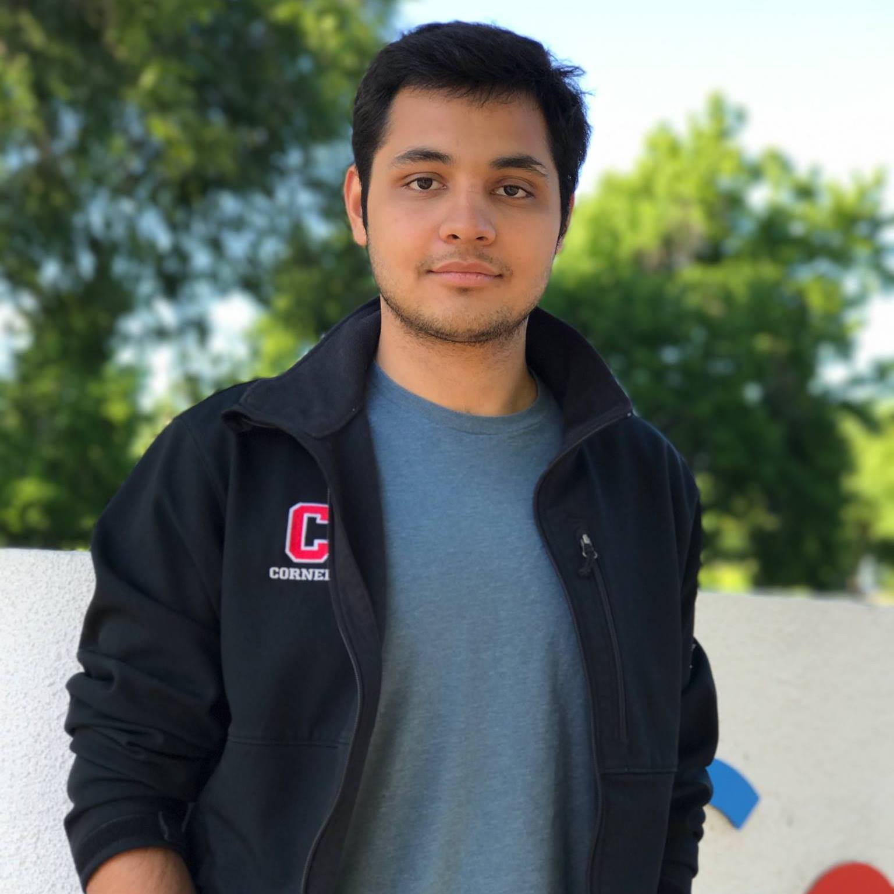

Email: sekhari [at] mit [dot] edu
I am a postdoctoral assosicate at MIT where I am fortunate to be advised by Prof. Sasha Rakhlin. I am interested in all theoretical aspects of Machine Learning. Recently, I have been working on high-dimensional stochastic optimization, and reinforcement learning (RL).
I completed my Ph.D. in Computer Science at Cornell University, where I had the incredible fortune of working with Prof. Karthik Sridharan and Prof. Robert D. Kleinberg. Prior to Cornell, I completed my undergraduate education from Indian Institute of Techonology Kanpur (IIT Kanpur), India, and after that, spent a year at Google Research as a part of the Brain Residency program (now called AI Residency).
Offline Reinforcement Learning: Role of State Aggregation and Trajectory Data
with Zeyu Jia, Alexander Rakhlin and Chen-Yu Wei
COLT 2024.
Harnessing Density Ratios for Online Reinforcement Learning
with Philip Amortila, Dylan J. Foster, Nan Jiang, and Tengyang Xie
ICLR 2024. (Spotlight)
Offline Data Enhanced On-Policy Policy Gradient with Provable Guarantees
with Yifei Zhou, Yuda Song, and Wen Sun
ICLR 2024.
When is Agnostic Reinforcement Learning Statistically Tractable?
with Zeyu Jia, Gene Li, Nati Srebro and Alexander Rakhlin
NeurIPS 2023.
Selective Sampling and Imitation Learning via Online Regression
with Karthik Sridharan, Wen Sun, and Runzhe Wu
NeurIPS 2023.
Short version also appeared at Interactive Learning with Implicit Human Feedback workshop at ICML 2023.
Contextual Bandits and Imitation Learning via Preference-Based Active Queries
with Karthik Sridharan, Wen Sun, and Runzhe Wu
NeurIPS 2023.
Short version also appeared at Interactive Learning with Implicit Human Feedback workshop, and The Many Facets of Preference-Based Learning workshop at ICML 2023.
Hidden Poison: Machine Unlearning Enables Camouflaged Poisoning Attacks
Jimmy Z. Di, Jack Douglas, Jayadev Acharya, Gautam Kamath, Ayush Sekhari
NeurIPS 2023.
Model-Free Reinforcement Learning with the Decision-Estimation Coefficient
Dylan J. Foster, Noah Golowich, Jian Qian, Alexander Rakhlin, Ayush Sekhari
NeurIPS 2023.
Ticketed Learning-Unlearning Schemes
with Badih Ghazi, Pritish Kamath, Ravi Kumar, Pasin Manurangsi, and Chiyuan Zhang
COLT 2023
Short version at Symposium on the Foundations of Responsible Computing, FORC 2023.
Computationally Efficient PAC RL in POMDPs with Latent Determinism and Conditional Embeddings
with Masatoshi Uehara, Jason D. Lee, Nathan Kallus, Wen Sun.
ICML 2023.
Hybrid RL: Using Both Offline and Online Data Can Make RL Efficient
with Yuda Song, Yifei Zhou, J. Andrew Bagnell, Akshay Krishnamurthy, Wen Sun.
ICLR 2023.
From Gradient Flow on Population Loss to Learning with Stochastic Gradient Descent
with Satyen Kale, Jason D. Lee, Chris De Sa and Karthik Sridharan.
NeurIPS 2022.
On the Complexity of Adversarial Decision Making
with Dylan J. Foster, Alexander Rakhlin and Karthik Sridharan.
NeurIPS 2022. (Oral)
Provably Efficient Reinforcement Learning in Partially Observable Dynamical Systems
with Masatoshi Uehara, Jason D. Lee, Nathan Kallus, Wen Sun.
NeurIPS 2022.
Guarantees for Epsilon-Greedy Reinforcement Learning with Function Approximation
with Christoph Dann, Yishay Mansour, Mehryar Mohri, and Karthik Sridharan.
ICML 2022 . Short version at RLDM 2022 - Reinforcement Learning and Decision Making conference.
SGD: The role of Implicit Regularization, Batch-size and Multiple Epochs
with Satyen Kale and Karthik Sridharan.
NeurIPS 2021.
Agnostic Reinforcement Learning with Low-Rank MDPs and Rich Observations
with Christoph Dann, Yishay Mansour, Mehryar Mohri, and Karthik Sridharan.
NeurIPS 2021. (Spotlight)
Remember What You Want to Forget: Algorithms for Machine Unlearning
with Jayadev Acharya, Gautam Kamath, and Ananda Theertha Suresh.
NeurIPS 2021. Short version at TPDP 2021 - Theory and Practice of Differential Privacy.
Neural Active Learning with Performance Guarantees
with Pranjal Awasthi, Christoph Dann, Claudio Gentile, and Zhilei Wang.
NeurIPS 2021.
Reinforcement Learning with Feedback Graphs
with Christoph Dann, Yishay Mansour, Mehryar Mohri, and Karthik Sridharan
NeurIPS 2020. Short version at ICML 2020 Theoretical Foundations of RL workshop.
Second-Order Information in Non-Convex Stochastic Optimization: Power and Limitations
with Yossi Arjevani, Yair Carmon, John C Duchi, Dylan J Foster and Karthik Sridharan
COLT 2020. Honorable mention for best talk award at NYAS ML symposium 2020.
The Complexity of Making the Gradient Small in Stochastic Convex Optimization
with Dylan Foster, Ohad Shamir, Nathan Srebro, Karthik Sridharan and Blake Woodworth
COLT 2019. (Best Student Paper Award).
Uniform Convergence of Gradients for Non-Convex Learning and Optimization
with Dylan Foster and Karthik Sridharan
NeurIPS 2018. Short version at ICML 2018 Nonconvex Optimization workshop.
A Brief Study of in-domain Transfer and Learning from Fewer Samples using a Few Simple Priors
with Marc Pickett and James Davidson
ICML 2017 workshop: Picky Learners - Choosing Alternative Ways to Process Data.
Awarded the second best paper prize among the workshop submissions.
On the Unlearnability of the Learnable
Yeshwanth Cherapanamjeri, Sumegha Garg, Nived Rajaraman, Ayush Sekhari, Abhishek Shetty
(Under Submission)
Langevin Dynamics: A Unified Perspective on Optimization via Lyapunov Potentials
August Y. Chen, Ayush Sekhari, Karthik Sridharan
(Under Submission)
Machine Unlearning Fails to Remove Data Poisoning Attacks
Martin Pawelczyk, Jimmy Z. Di, Yiwei Lu, Gautam Kamath*, Ayush Sekhari*, Seth Neel* (*-equal advising)
Preliminary version at
(Under Submission)
Computationally Efficient RL under Linear Bellman Completeness for Deterministic Dynamics
with Runzhe Wu, Akshay Krishnamurthy and Wen Sun
(Under Submission)
Machine Learning Theory - Fall 2018 (Graduate Level Course)
Under Prof. Karthik Sridharan, Cornell University
Introduction to Analysis of Algorithms - Spring 2018
Under Prof. Robert Kleinberg, Cornell University
Machine Learning for Data Science - Fall 2017
Under Prof. Karthik Sridharan, Cornell University
Our mission is to develop a strong, supportive learning theory community and ensure its healthy growth by fostering inclusive community engagement and encouraging active contributions from researchers at all stages of their careers.
Please feel free to contact us for any questions / feedback / suggesions regarding LetAll. We would love to hear from you.